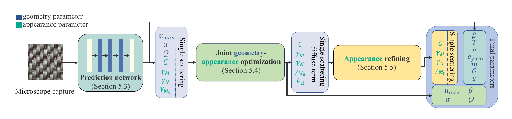

Abstract
Accurately rendering the appearance of fabrics is challenging, due to their complex 3D microstructures and specialized optical properties. If we model the geometry and optics of fabrics down to the fiber level, we can achieve unprecedented rendering realism, but this raises the difficulty of authoring the fiber-level assets. Existing approaches can obtain fiber-level geometry with special devices (e.g., CT) or hand-designed procedural pipelines. In this paper, we propose a method to capture fiber-level geometry and appearance of woven fabrics using a single low-cost microscope image. This may seem like an impossible task: a single image from a low-cost microscope looks very different from the final rendering we would like to achieve, and the information contained in it may seem minimal. We propose a novel fiber parameter estimation pipeline in a coarse-to-fine manner, establishing a subset of parameters step by step. At the core of our pipeline are differentiable procedural geometric and appearance models for woven fabrics at the fiber level, enabling both geometry and appearance to be optimized simultaneously. We first use a simple neural network to predict initial parameters, then we optimize the parameters of procedural fiber geometry and an approximated shading model via differentiable rasterization to match the microscope photo more accurately. Finally, we refine the fiber appearance parameters via differentiable path tracing, converging to accurate fiber optical parameters, which are suitable for physically-based light simulations to produce high-quality rendered results. We believe that our method is the first to utilize differentiable rendering at the microscopic level, supporting physically-based scattering from explicit fiber assemblies. Our fabric parameter estimation achieves high-quality re-rendering of measured woven fabric samples in both distant and close-up views. We also propose a patch-space fiber geometry procedural generation method and a two-scale path tracing framework for efficient rendering of fabric scenes.
Fiber Parameter Estimation

Recovery Results
The recovered models reproduce both micro-scale fiber detail and meso-scale appearance across synthetic and real captures, and transfer directly to scene-scale rendering.
BibTeX
@article{Li:2026:FiberFabric,
title={Fiber-level Woven Fabric Capture from a Single Microscopic Image},
author={Zixuan Li and Pengfei Shen and Hanxiao Sun and Zibo Zhang and Yu Guo and Ligang Liu and Ling-Qi Yan and Steve Marschner and Milo\v{s} Ha\v{s}an and Beibei Wang},
journal={ACM Transactions on Graphics},
volume={45},
number={5},
article={175},
pages={1--18},
year={2026},
month={October},
doi={10.1145/3816036}
}